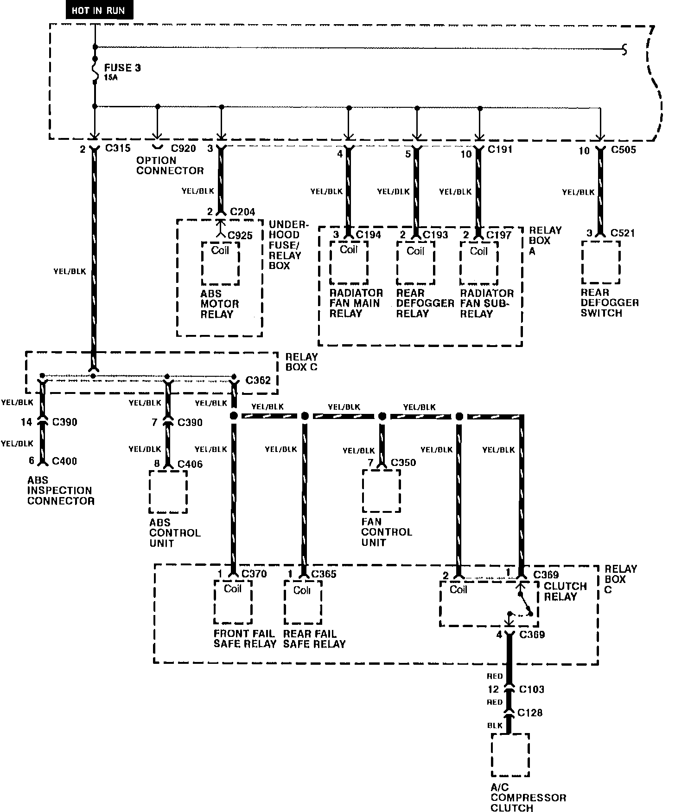
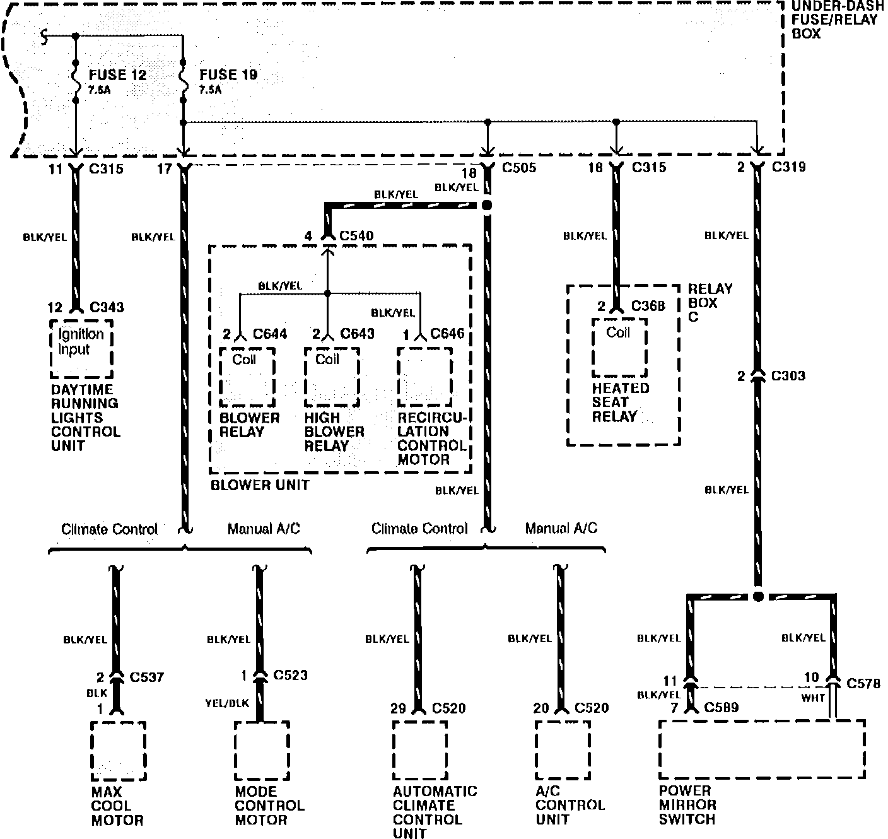

Operation CHARM
: Car repair manuals for everyone.
Home
>>
Acura
>>
1992
>>
Legend Coupe V6-3206cc 3.2L SOHC FI
>>
Repair and Diagnosis
>>
Power and Ground Distribution
>>
Fuse
>>
Diagrams
>>
Electrical Diagrams
>>
Fuse 3, 12, and 19
Fuse 3, 12, and 19
Fuse Panel Details: Fuses 3, 12, And 19:

Fuse Panel Details: Fuses 3, 12, And 19:
